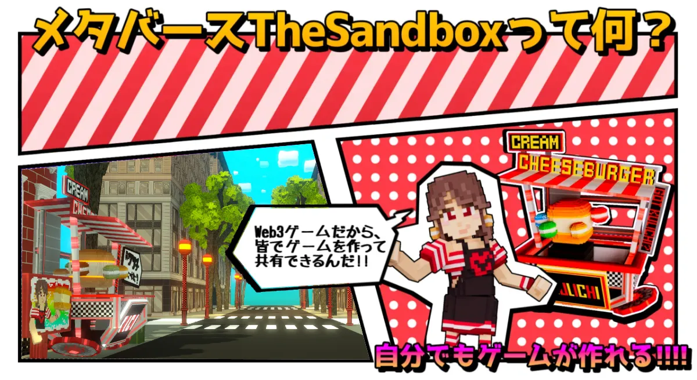
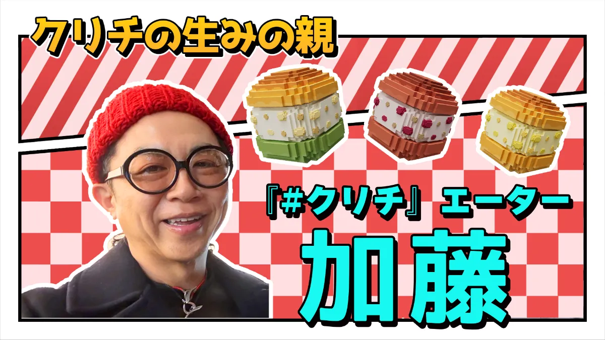
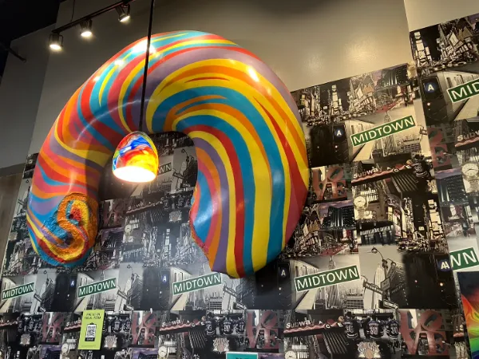

クリチランド制作プロジェクト！如月工房が語るThe Sandboxの魅力と挑戦✨

こんにちは！Vsw株式会社のマーケティング担当TOMです。今回は、Vsw社のメタバース担当・如月工房さんに、The Sandbox上で進行中の大型プロジェクト「クリチランド」について、その魅力と制作への挑戦をたっぷりお伺いしました！🍔✨
📖 この記事はこんな人におすすめ！
- メタバース制作の裏側に興味がある人🎮
- The Sandboxで世界観を作りたいクリエイター🧱
- クリチランドを訪れてみたい人🍒🧀
- Web3時代のブランディングを知りたい人🌐
🏗 クリチランドとは？

クリチランドは、ニューヨークの街並みをThe Sandbox上に再現し、そこにVsw社の世界観とキャラクター「クリチちゃん」を融合させた体験型メタバースです。プレイヤーはバーチャルNYを散策しながら、クリチ料理や隠れた仕掛けを楽しめます。🗽
🔨 制作の裏側：如月工房さんインタビュー
TOM： クリチランドの制作を始めたきっかけを教えてください。
如月さん（如月工房）： Vsw代表の加藤さんと「#クリチの世界を海外にも届けたい」という話をしたのがきっかけです。現実の店舗だけでは限界がありますが、メタバースなら世界中の誰もが体験できます。しかもThe SandboxのCOOであるセバスチャンさんのキャラクターがゲーム内に登場することで、世界中のメタバースファンにも刺さる設計にしました。✨

TOM： 制作で特にこだわった点は？
如月さん： ニューヨークらしさを voxel art で表現するのは本当に大変でした。黄色いタクシー、ブラウンストーンの建物、地下鉄の入り口——細部まで観察して、voxelの制約の中で再現しています。時間帯によって街の表情が変わる演出も入れています。🚕
TOM： クリチちゃんが登場するシーンも楽しみですね。
如月さん： クリチちゃんはランド内の複数スポットに登場します。ダンスしたり、写真撮影ができたり、プレイヤーを案内したり。愛嬌のあるキャラクターとして、ブランドの顔になってほしいと思っています。💖
🌍 The Sandboxで体験することの意味

The Sandboxは世界中のクリエイターやブランドが参加するオープンなメタバースです。AdidasやGucci、The Walking Deadなど、グローバルIPも数多く出展しており、Vswも同じ舞台で勝負できる環境が整っています。
クリチランドは「ブランドがメタバースで何をすべきか」という問いへの、私たちなりのひとつの答えです。広告ではなく、遊びながら好きになってもらう——そんな新しい体験を目指しています。🎮
🚀 これからの展望
クリチランドは段階的に拡張予定です。ミニゲームの追加、限定イベント、リアル店舗とのクロスオーバー企画、NFTによるコレクション体験など、アイデアは尽きません。
如月工房さんをはじめ、PowPadsLabなどの優秀なクリエイターチームと共に、世界に誇れるメタバースブランド体験を作り上げていきます！
執筆：Vsw株式会社 マーケティング担当 TOM 🍔🐾